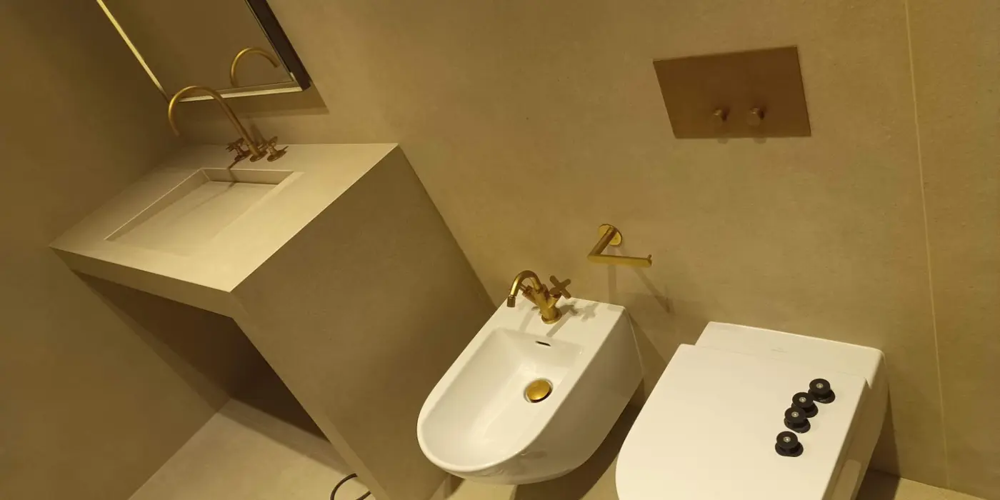
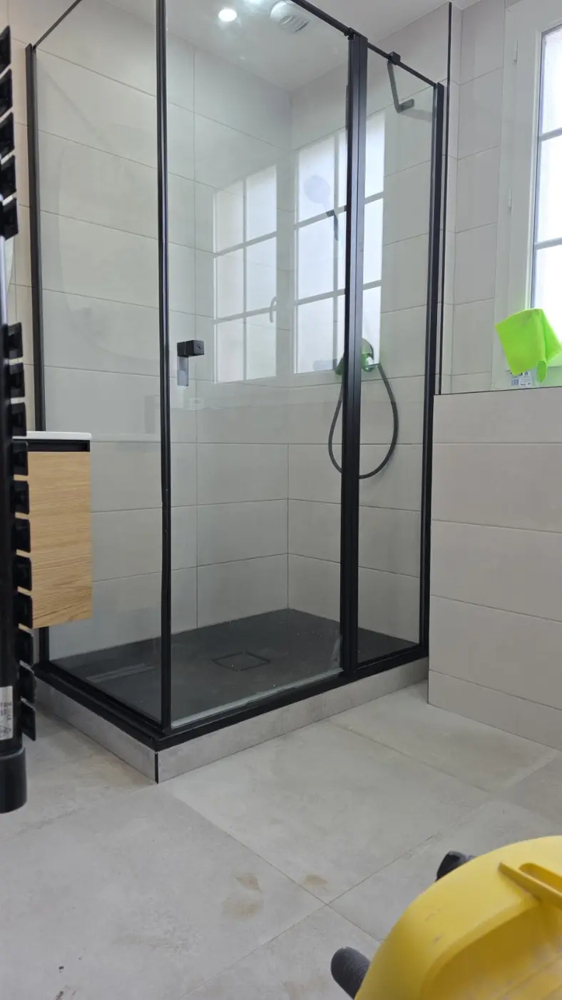
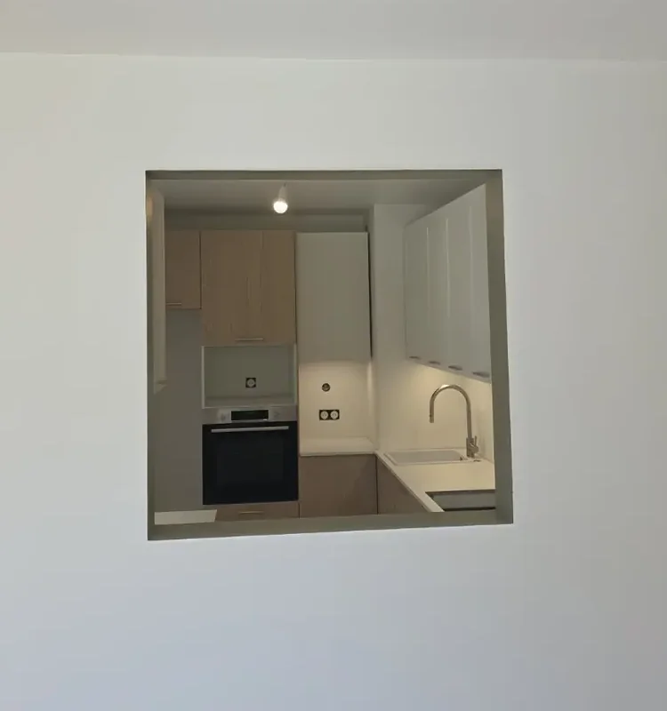

N° 01
Paris 16e
Salle de bains, finition laiton
Installation et réglage des équipements apparents, avec une attention particulière portée aux alignements et à l'harmonie des finitions.
Une sélection de projets menés avec soin : montage, ajustements, pose et finitions pour des intérieurs durables et cohérents.

Installation et réglage des équipements apparents, avec une attention particulière portée aux alignements et à l'harmonie des finitions.

Isolation et redressage de murs irréguliers sous combles, réalisés selon les normes en vigueur : des parois droites et nettes, prêtes pour la peinture.

Pose d'un rythme vertical en bois, raccords continus et intégration discrète de la porte pour un rendu architectural.

Mise en place, réglage et alignement d'un ensemble aux formes courbes, avec finitions autour du carrelage.

Pose et ajustement de la paroi, contrôle des aplombs et réalisation des finitions visibles pour une ligne contemporaine.

Un espace compact dont l'aménagement se découvre depuis la pièce voisine, cadré par une ouverture nette dans le mur.
Ces photos présentent des travaux déjà réalisés. Toute nouvelle prestation est acceptée uniquement après vérification de son périmètre, des supports et de la couverture d'assurance applicable.

Envoyez quelques photos, votre ville et les dimensions utiles. La faisabilité et le tarif seront confirmés avant l'intervention.